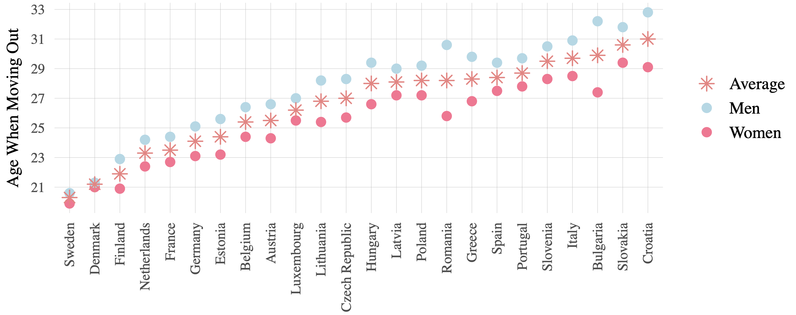
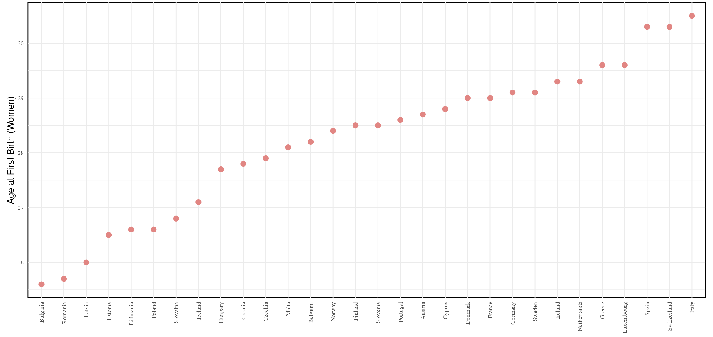

Andrea Pop-Catalisan
I am a Ph.D. student in Economics at the Paris School of Economics (PSE). I completed my master's and bachelor's degrees in Economics at University Carlos III of Madrid (UC3M). My research interests primarily focus on family, health, and gender economics.
Previously, I worked as a Research Analyst at the European Central Bank in DG Economics & DG Research. I also completed a pre-doc at the Barcelona School of Economics & UPF and a research internship at the Bank of Spain.
You can find my CV here and you can email me at andrea.pop@psemail.eu!
I am a Ph.D. student in Economics at the Paris School of Economics (PSE). I completed my master's and bachelor's degrees in Economics at University Carlos III of Madrid (UC3M). My research interests primarily focus on family, health, and gender economics.
Previously, I worked as a Research Analyst at the European Central Bank in DG Economics & DG Research. I also completed a pre-doc at the Barcelona School of Economics & UPF and a research internship at the Bank of Spain.
You can find my CV here and you can email me at andrea.pop@psemail.eu!
Empty Nest Syndrome: Parents’ Labor Supply and Well-Being
Abstract
When children leave the parental home, parents may gain additional time to allocate to either leisure or employment. This paper examines how the transition to an empty nest—defined as the point when all children have moved out of the parental household—affects parents’ labour supply and well-being. Focusing on mothers and fathers separately, I employ an event-study approach using data from the Survey of Health, Ageing, and Retirement in Europe (SHARE). The results show that mothers who are already working tend to increase their weekly hours following the empty-nest transition, while there is little change in fathers’ labour supply. However, there is no evidence of mothers re-entering the labour market, nor are there significant effects on depressive outcomes for either parent.
Presented at: European Health Economics Association (Brussels); ECONtribute European Doctoral Program Jamboree (Bonn); PSE Behavioural Atelier (Paris); GENDHI (EHESS, Paris).
The Price of Settling Down
(with Sveva Manfredi)Abstract
Rising singlehood and a broader “relationship recession” are reshaping rich societies, with more adults leaving partnerships or avoiding them altogether. A common assumption is that, compared with singlehood, cohabiting relationships are unambiguously beneficial for well-being—economically, socially and emotionally. One underexplored possibility is that cohabitation carries invisible psychological and social costs, which vary with local norms and may gradually erode well-being and make separation more attractive. In this paper we study these potential “settlement costs” of cohabitation using repeated cross-sections from the European Social Survey and a pseudo–event-study design. We approximate within-person dynamics by comparing individuals at different durations since moving in with a partner, while controlling for observables and time-invariant regional factors. We trace how mental well-being, self-rated health, and time use evolve across the cohabitation spell and how these patterns differ across European normative regimes. We find little evidence of large, universal well-being gains from cohabitation. Instead, we document modest but systematic increases in negative affect—especially depressive symptoms, tiredness and feelings of strain—in more traditional or family-normative European regions, alongside region-specific shifts in socializing and leisure. Self-rated health is largely unaffected. These results suggest that cohabitation can entail small but persistent emotional and social costs in certain normative contexts.
The Cost of School Holidays: Mothers Pay the Price
(with Manuel E. Lago)Abstract
Exploiting the quasi-random timing of interviews relative to school holidays, we assess whether parental responsibilities induce short-term changes in well-being and work behavior.
Inequality and Conflict: The Long-Run Legacy of the Reconquesta
(with Stefano Falcone , Gianluca Russo , and Daniel Carrera)Abstract
We study how historical inequality shapes long-run political preferences. Our setting is Catalonia, where Christian counts expanded southward into Al-Andalus between the ninth and eleventh centuries at heterogeneous speeds, creating a frontier whose location was driven by idiosyncratic military events. Using a spatial regression discontinuity design comparing municipalities on either side of this frontier, we find that areas conquered more rapidly display persistently stronger support for the radical left. Southern municipalities show higher vote shares for radical-left parties in all democratic elections since 1977, a greater historical presence of anarcho-syndicalist and communist organizations, and more frequent protest activity. These patterns extend back to the Second Republic and the Spanish Civil War, including differences in militias, collectivization, and repression. We trace these effects to the resettlement process in fast-conquered territories, which produced concentrated landholding, weaker state capacity, and a large class of landless peasants. Our findings show how inequality under weak political authority can generate lasting radical political identities.
Media Coverage: [ 5centims ]
Banking Crises Without Panics
[ Quarterly Journal of Economics ]
During my stay at the European Central Bank (ECB), I provided research assistance to Luc Laeven and Matthew Baron.
Presented at: European Central Bank.
Average Age at Moving-Out in Europe (2000–2024)
An interactive visualization tool to explore the estimated average age of leaving the parental home across Europe (sources: EU-SILC & EU-LFS).
Under development for the years 1990–1999.
Average Age at Marriage in Europe (2013–2013)

An interactive visualization tool to explore the estimated average age of marriage across Europe (sources: EU-SILC).
Average Age at First Birth in Europe (2012–2023)
An interactive visualization tool to explore the estimated average age at first birth across Europe (sources: EU-SILC & EU-LFS).
Travel patterns across Europe

Interactive Shiny dashboard exploring my travel patterns across European countries.